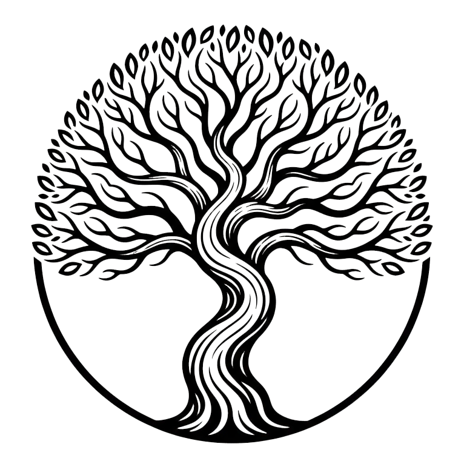
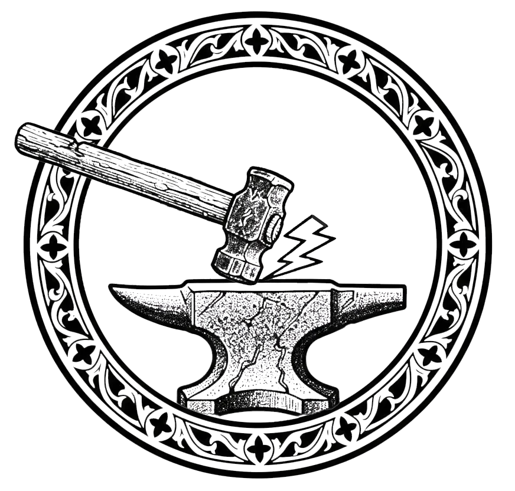
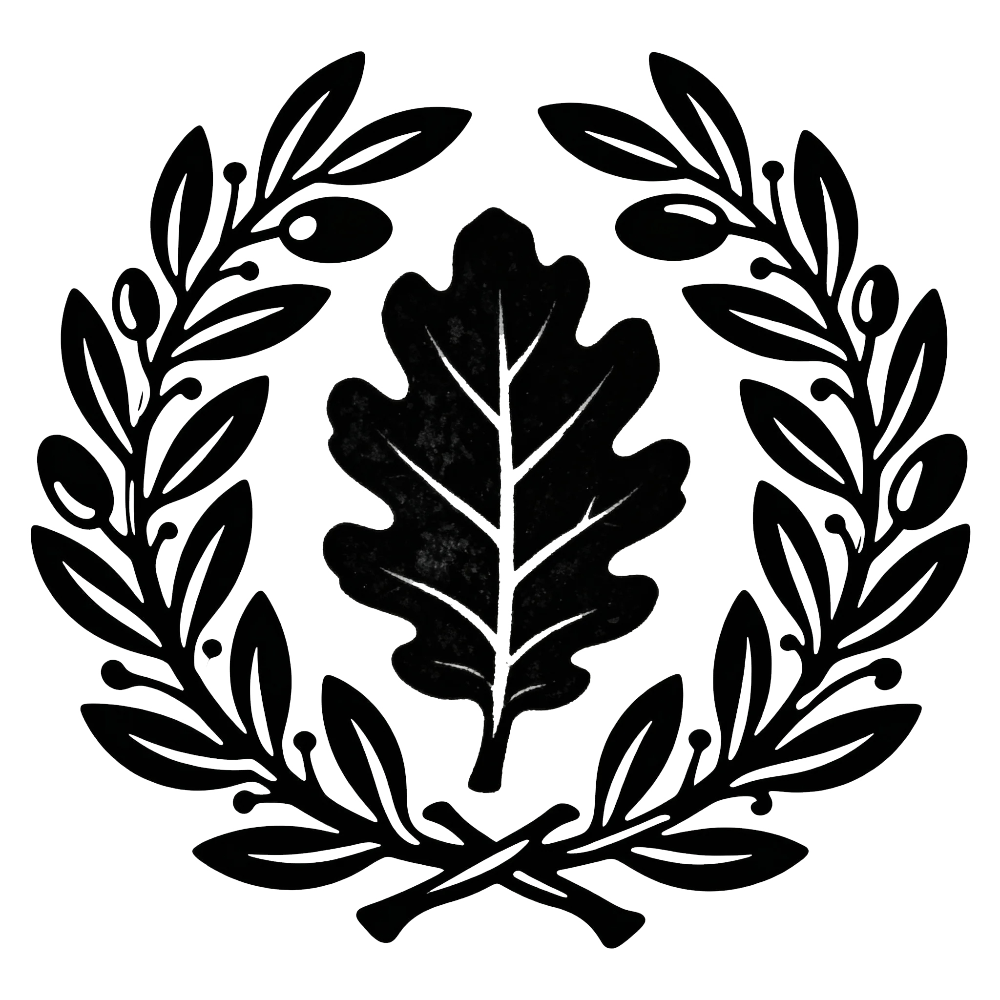
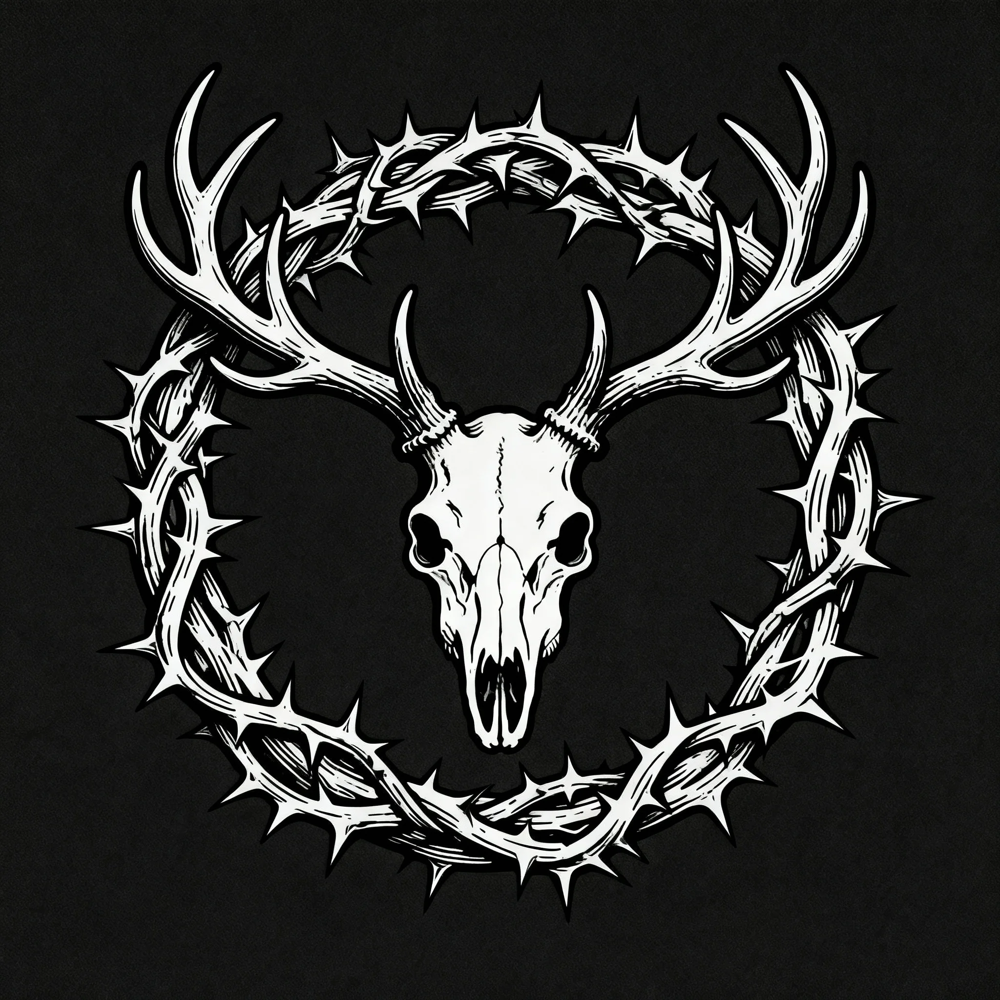

The history of our world stretches back past our books, scrolls, and even our stone writings. There are tales that are beyond history, beyond legend, and have faded into to myths and half-truths. We know that the world was not always as it is today, that humans were pure and set aside from the beasts, they were caretakers and stewards for the earth. The Unmade were prideful and greedy and built up great cities to glorify themselves and to seek pleasure. They wasted the land, stripping it of riches without little care to that which is known well to us today: all things are connected and the impact of our actions can affect ourselves as well as the world around in unforeseen ways. This civilization lasted three thousand years and the world and the animals therein where conquered and spent.
But just as a house of straw cannot withstand the storm the Unmade were swept aside. Even YRT, the all powerful and single God of the universe, has limits on patience and the deeds of the Unmade could not be overlooked. Even though they knew his charter and read his laws, the Unmade put pride above truth and paid a horrible price. YRT leveled the lands, dashed the cities, and held judgement on our forebearers at the mountain of Orchas. For two turns of the earth he read aloud the crimes committed by them and after each charge he smote the earth with his hammer. Upon the final reading he laid down the great and terrible sentence that has bound us all: “Like senseless beasts you have befouled this land and harmed my creatures even though you were charged as stewards. You have planted this harvest and you shall reap the result: you are forever more doomed to be tied to the land as beasts and dependents.”
With that judgement we became mixed with the animals. No longer was a pure human born again. As each of us is born, we are touched by YRT and our beast nature manifests itself in some more than others.
| Roll | Social Rank | Class | Description | Number of Animal Features |
|---|---|---|---|---|
| 1 - 5 | 1 | Pure | Pure with no detectable characteristics. Cannot use Touched Assets. | 0 |
| 6 - 65 | 2 | Prime | Small animal manifestations that are concealable or correctable through surgery or magic | 1 |
| 66 - 85 | 3 | Second | Noticeable deviations on the order of 1-3 major manifestations that are diminished but not corrected through surgery or magic | d6 % 3 + 1 |
| 86 - 95 | 4 | Third | Gross uncorrectable or non-symmetric manifestations of 4 - 6 body parts | d6 % 3 + 4 |
| 96 - 100 | 5 | Feral | More beast than man including those who are affected in their mind only. | |
| How to use this table: |
- Roll on the YRT - Social Rank table to determine what your rank is. If you are Pure, stop. In any interactions in Freeport that require a bond or negotiation you receive +1 on your roll.
- Roll on the YRT - Touched Animal to determine what type of animal you are manifesting.
- Consult the Number of Animal Features column and note the number listed or roll the dice indicated to determine how many features are affected.
- Roll on the YRT - Touched Features Oracle once for each number in step 3.
Then use the results to craft a description for your character.
The ranks of 3-5 are deemed the Touched. The more touched you are and the more visible those characteristics, the lower in social rank you are. At least to the Puritans and non-religious population.
There are three main religions within the Freeport area:
- Puritans: these puritans comprise 80% of the worshipping population in Freeport and are dedicated to reversing the fall of man. The puritans have created the system of naming that shows the amount of beast in each person. Once a child is born, an inquisitor is brought in to establish how “touched” they are. If the beast manifestations are of a different class or species than either of the parents then the child is removed to be raised by suitable foster parents or in a communal environment (creche). The naming system establishes a caste order with only those of Pure status attaining positions of power and influence. The Puritans pray to YRT for the restoration of man.
- Optime: also worshippers of YRT, the Optimes (15%) are believers that humanity’s fall is a result of the morals of the Unmade and that to re-establish man one must exhibit behaviors that are pleasing to YRT. Love, joy, peace, patience, kindness, goodness, faithfulness, gentleness and discipline are cornerstones in their faith. There is considerable friction between Optimes and Puritans as there is an element of social justice that doesn’t mesh well with the caste system of the Puritans.
- Wildens: this underground widely reviled movement (5%) is devoted to the worship of animal gods. The Wildens believe that the fall was a part of the natural cycle and destiny of man and call upon their beast gods to rise up and re-establish a new world order. Mostly Thirds and Ferals comprise the followers and their power is scattered among the various animal clans. Even though their aims are the same it is not unusual for the clans to be pitted against one another like animals in nature today.
Abstinence and the Bloodless
The Puritan doctrine that humanity was sentenced to be mixed with the beasts produces its most visible everyday practice at the table. To eat the flesh of a beast is held to affirm the sentence: to take the thing you were condemned to become into your own body. The Pura Ecclesia therefore keeps days of abstinence, on which nothing that had blood or a face may be eaten: no meat, no fowl, no eggs, no milk.
What remains permitted is graded, and the grading matters socially as much as it does theologically.
- The bloodless: oysters, mussels, cockles, and the rest of the shellfish. Faceless, bloodless, and by Ecclesia reasoning carrying no beast-nature at all. This is the strict and creditable observance, and the one an ambitious household will be seen to keep.
- Cold flesh: fish. Permitted, and what most people actually eat, on the grounds that a fish is a poor sort of beast. Devout opinion has never been entirely comfortable with it and the argument reopens roughly once a generation.
- Forbidden: everything warm.
Abstinence days run to something near a third of the year once the fixed observances, the penitential weeks, and the eves of the great days are counted, and the calendar is published by the Ecclesia and followed even by households that are not otherwise devout, because the alternative is to be seen not following it. The economic consequence is enormous and entirely deliberate: the Pura Ecclesia sets the demand for a third of the region’s food supply, and every fishing and oystering town on this coast plans its year around a calendar the church controls.
Optimes keep the abstinence loosely and treat it as a discipline rather than a purity law. Wildens do not keep it at all, and consider the whole doctrine an insult to the twelve: Ghrim’s boar and Haur’s ox are not impurities to be starved away.
Oblation and the Houses of Service
The inquisitor at the cradle and the creche are old practice and openly defended: a child whose beast-nature does not match its parents’ is removed and raised by the church. What has grown out of that, over the last two generations, is something the Ecclesia does not describe in the same voice.
The mission in the Stews is where it happens. The Stews are poor, they flood, and they are the most heavily Touched quarter in Freeport, the place people go when their face closes doors. The church’s almoners work it constantly, and the offer they carry is always the same. Your child is marked. We can offer purification. It comes with bread, with a physician, with the arrears on a debt settled, and with coin: not framed as a price, framed as alms to a family relieved of a burden. The family marks a book. The child is oblated: given to the church, wholly and permanently, in the way children have always been given to religious houses. There is no term and no age of release. It is not understood to be a transaction and everybody involved understands it as one.
What the oblates get is real, which is the part that makes the whole thing work: shelter, food on days the Stews has none, letters, a trade, and a place in a hierarchy that will not stone them in the street. What they are taught alongside it is that they are unclean: that YRT’s sentence sits more heavily on them than on the Pure, that this is not an injustice but a measurement, and that the one road open to them is service. Purification is not a rite. It is a lifetime of work performed for the church, and the work is never finished, and this is not concealed from them. They are told it plainly and they mostly believe it, because they were four years old when they were told it first.
They staff the laundries, the kitchens, the drying yards, the hospices, the sculleries and the cartage of every Ecclesia establishment in the city, and they are not paid. Freeport knows. Freeport considers it charitable.
And there is a house in the east. An oblate who runs, steals, questions doctrine in front of the others, or whose beast-nature comes up too far to be shown to visitors is not turned out: a turned-out oblate is an indoctrinated witness on a public street. They are told they are being sent where the work is harder and the cleansing is complete, and they are taken a day east of the city to a small unwatched bay, and put onto a Buralian ship by skiff, and never seen again. The harbour chains and the customs desks at the Grand Office are not involved, because the coast is not the harbour and nobody is counting boats on an empty beach.
The boats belong to the Weirden Fen trade: shallow-draft coasters that bring fen fruit, medicinals and alder piling into Freeport and would otherwise go home light. The eastern run is backhaul on a trade that has gone both ways for generations, which is exactly why nobody has ever noticed it. The crews are entirely comfortable with the cargo, since slaving is lawful where they come from and they see nothing unusual in it. In their reckoning the cargo is chattel of the Nyssian orders: Conclave slaves, as they say, the distinction between the two orders being invisible and uninteresting from four hundred miles away. But a taking in their country runs its term and the man walks home at the end of it; that is what the word means where they are from. It has not occurred to them to ask what the term is here, and nobody has told the passengers that they are not going to a mission.
What the house in the east does to the houses in Freeport. The eastern establishment has an appetite, and appetite in an institution travels backwards. Houses that sent one difficult oblate east in a year now send several, on the strength of a request from above that nobody at those houses has had explained to them. The almoners working the Stews have been told to be less particular at intake. The definition of unmanageable has quietly moved, and it has moved to fit a demand nobody in the chain has been told the shape of. This is the most damning thing about the whole arrangement and the hardest to see from inside it: not that the church disposes of the oblates it cannot use, but that it has begun taking children in order to have them to dispose of, and every person involved believes they are performing an act of charity.
Puritan Symbology

The hammer represents YRT (the Puritans’ singular and supreme God) and his righteous judgment. It is the tool by which YRT delivered justice and punishment upon humanity for its pride, greed, and failure as stewards of the world, as described in their origin myth. It also evokes the Puritan commitment to discipline, order, and the restoration of their lost purity through rigorous societal structures and rituals.Religion.md
The anvil signifies the forging of humanity’s spirit and the potential for restoration. Under YRT’s hammer, the people must endure suffering and transformation, hoping to be made “pure” again. The anvil is thus both a symbol of endurance and a place where one’s flaws are shaped or burned away, much like impurities in metal, aligning with the Puritans’ caste-based system for identifying degrees of beast-manifested “impurity”.
The solitary lightning bolt flying from the impact point represents YRT’s divine power, the moment of judgment, and the irrevocable consequences of past sins. For the Puritans, it is both a warning and a promise: the power to smite, but also the divine spark that might one day restore humankind if they prove worthy. The bolt underscores the seriousness of transgression and the hope that, by enduring the forge, transformation and enlightenment may eventually strike.
Optime Symbology

The oak leaf at the center stands for strength, endurance, and growth, qualities admired and pursued by Optimes as virtues necessary for spiritual restoration in the eyes of YRT.
The olive wreath encircling the oak leaf is an ancient emblem of peace, unity, and reconciliation, representing the Optimes’ focus on exhibiting love, joy, peace, patience, kindness, goodness, faithfulness, gentleness, and discipline.Religion.md
Together, the symbol expresses the Optime belief that humanity’s return to favor with the divine depends not on enforcing strict purity or brutal hierarchy, but on cultivating virtue, harmony, and gentle strength, embodied both subtly by olive and steadfastly by oak.
Wildens Symbology

The stag’s skull represents reverence for beast gods, ancestral power, and acceptance of the animalistic nature bestowed upon humanity after YRT’s judgment.
Antlers are a sign of strength, wildness, and renewal in nature, connecting followers to cycles of death and rebirth, the persistence of the clan, and the aspiration to reclaim a primal world order.
The wreath of briar branches symbolizes the harsh, untamed aspects of nature, the endurance of their underground faith in the face of persecution, and the interconnected destinies of beast-manifested peoples. Thorns mark the sacrificial struggles and latent dangers Wildens face, always threatened by rival clans and societal scorn.
Together, these features express the Wildens’ devotion to beast gods, belief in the inevitability and righteousness of the fall from human purity, and their desire to reclaim the strength, community, and spirituality embodied by the natural world, even if it means opposing other factions or enduring perpetual hardship. Although, worship of the Feral Gods is sometimes seen in feral and highly touched individuals, it is very common among the Verdani.
The Twelve Feral Gods
To most folk, the Feral Gods are not distant sky-powers but monsters that climbed their way into godhood. They are said to have begun as ordinary beasts (or, in tellings that do not get repeated in front of a priest, feral men and women) who gorged themselves on raw mana until their bodies and minds warped beyond recognition. Saturated with living sorcery, they stopped aging, stopped dying, and began to bend the world around them: shaping storms, blights, hunts, and harvests according to their hungers. Priests and scholars argue over whether they are divine, demonic, or just the inevitable end-state of unchecked mana exposure, but on the roads and in the taverns people speak of them more simply, as great animal lords who stride half in this world and half in the unseen, hungry for offerings and attention.
To the Wildens they are an expression of the animal nature of the new order of the world and true gods.
Kroduk, the Dragon
- Animal: Dragon
- Domains: Fire, destruction, conquest, catastrophic mana-storms
- Aspect: Vast, many-horned wyrm whose scales shimmer with all seven mana colors, brightest in burning reds and sickly darks
- Worship & Oaths: Favored by warlords and reckless battlemages; “Kroduk’s burning nethers!”
Shul, the Rat-Mother
- Animal: Rat
- Domains: Survival, scavenging, plague, undercity commerce, secrets
- Aspect: A swollen, many-eyed queen rat whose fur writhes like a living swarm
- Worship & Oaths: Slum-dwellers and thieves; “Rat-Mother’s whiskers,” “By Shul’s brood”
Haur, the Ox-Father
- Animal: Ox
- Domains: Labor, endurance, oaths and contracts, burdens, harvest hauled to market
- Aspect: Massive iron-shouldered aurochs, hide like plated stone, hooves that furrow rock
- Worship & Oaths: Farmers, teamsters, miners; “By Haur’s back,” “Ox-Father witness this”
Vexis, the Tiger
- Animal: Tiger
- Domains: Predation, courage, solitary prowess, sudden violence
- Aspect: Pale mana-striped tiger with burning eyes that see fear and intent
- Worship & Oaths: Hunters, duelists, assassins; “Vexis’ claws,” “In the Tiger’s shadow”
Talli, the Hare
- Animal: Hare
- Domains: Luck, swiftness, narrow escapes, chance meetings
- Aspect: Long-limbed hare that seems to flicker and double, leaving ghost-echoes behind
- Worship & Oaths: Gamblers and smugglers; “Hare’s luck,” “Talli turn my feet”
Jang, the River-Serpent
- Animal: Snake
- Domains: Rivers, poisons, hidden knowledge, molting and reinvention
- Aspect: Colossal water-snake of mirrored scales, trailing altered currents and sudden blooms of life
- Worship & Oaths: Boatmen, poisoners, alchemists; “Serpent’s tongue,” “By Jang’s coils”
Brindle, the Horse-Lord
- Animal: Horse
- Domains: Travel, messages, momentum in war and trade, storms on the plains
- Aspect: Many-maned stallion wreathed in sparks and dust, hooves that thunder
- Worship & Oaths: Couriers, caravans, cavalry; “Brindle carry me,” “Horse-Lord’s hooves”
Koya, the Red Stag
Koya is the great hind of the deep woods, antlers like branching crowns of living bark and ember-tips, eyes the color of old amber caught in sap. She is the mother-figure of the feral pantheon: patient, watchful, and implacable when her own are threatened. Her hooves leave no mark on soft earth unless she wills it, but where she lies to rest, groves spring up in her wake.
- *Animal: Stag (hind)
- Domains: Forests and wild places, motherhood and guardianship, safe paths, rites of passage, the protection of the vulnerable
- Aspect: Towering red stag-mother with vast, moss-hung antlers and a mane of leaves and mist; small creatures shelter in her shadow without fear
- Worship & Oaths: Rangers, midwives, and those who guide others through danger; “Koya keep you” as a quiet blessing, “By the Stag-Mother’s eye” when invoking her judgment or protection
Menet, the Monkey
- Animal: Monkey
- Domains: Mischief, invention, improvisation, social chaos
- Aspect: Many-handed primate draped in stolen tools and charms, always attended by tiny tinkering sprites
- Worship & Oaths: Street kids, tricksters, experimental artificers; “Monkey’s bargain,” “Menet’s fingers were in this”
Seshen, the Rooster
- Animal: Rooster
- Domains: Dawn, vigilance, pride, public reputation
- Aspect: Towering rooster with a blazing comb, voice that cuts through any clamor
- Worship & Oaths: Watchmen, heralds, gossips; “Seshen’s call,” “Rooster’s eye is on you”
Hundr, the Hound
- Animal: Dog
- Domains: Loyalty, packs and households, oaths of fealty, pursuit
- Aspect: Scarred hound with frost-breath and a nose that follows loyalty and betrayal as much as scent
- Worship & Oaths: City guards, caravan guards, some householders; “Hundr witness this,” “Hound take you”
Ghrim, the Boar-Father
- Animal: Pig/Boar
- Domains: Feasting, rage, fertility of field and flesh, stubborn defiance
- Aspect: Massive boar with tusks veined in living green and red, body a map of healed-over wounds
- Worship & Oaths: Farmers, soldiers, tavern crowds; “Boar-Father’s tusks,” “Ghrim’s table”